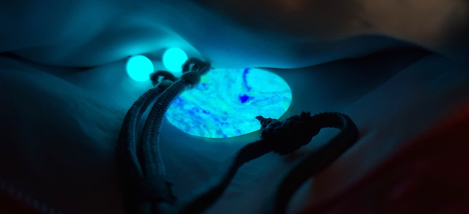

Ye Ming Zhu / Night Bright Pearl
The Elusive Ye Ming Zhu
For thousands of years legends of glowing energy stones with magical powers have travelled far and wide. Though these legends are known by many, the reality of these glowing treasures have only been known by a few. Because of their rarity, Royals and Spiritual Masters were of the few fortunate enough to experience them. They are considered to be one of the rarest, most mysterious and precious objects in the world. Named by the Chinese as “Ye Ming Zhu” (Night Bright Pearl), they are said to bring health, good fortune, increase Qi, and strengthen the aura. After exposure to light, heat, and sometimes even Qi (invisible life-force energy) they can glow for hours on end. Many have observed their glow brighten through meditation, Qi-Gong, dreams, and other deeply connected moments.
Though Ye Ming Zhu has always been a mystery, recently some of its secrets have begun to be revealed.
In ancient times legends were not only stories told, but often a cultures only way of sharing their history. Ye Ming Zhu (Night Bright Pearl) is not only a recorded part of Chinese history, but its lore has been immortalized for thousands of years in legends by many cultures. In the legends, these glowing stones are revered and symbolic of good fortune, wisdom, wealth, and divinity. Only recently, have we been able to start experience the reality of these legends in our lives!
What YMZ can do for you
Ye Ming Zhu can help increase your vibration, awareness and intuition. It can also help you amplify your manifestation abilities. Like an energy battery, it can store and transmit energy and information. Many experience this as heat, lightness, or tingling sensations. People have shared Ye Ming Zhu’s strength allows them to feel subtle energies, often for the first time. After learning or strengthening the ability to feel subtle energy many have an increased sensitivity to crystals, plants, people, and places.
[Crystal] Ye Ming Zhu is a crystal radio that connects to multi-dimensional Universes, channelling intelligence from other dimensions into our own 3-dimensional reality. It’s like a tuning fork, a musical chord of perfect frequencies, all of its wave-lengths in perfect phase. Once activated, twelve dimensions channel through it unimpeded, and create a zone of protection, purify water, and remove discordance.
-Dr. Patrick Flanagan
Knowing the difference between Fake & Real YMZ
There is a number of people worldwide trying to pass off fake YMZ as Authentic. Many good quality forgeries and fakes continue to appear on the market, and can be hard for even an experienced collector to recognize and differentiate the difference between them... however these can be revealed with XRD (X-Ray Diffuser) Analysis showing the true crystal structure and chemical makeup.
Fake Ye Ming Zhu will ALWAYS lack the precise and authentic crystalline structure – and most often they will also weaken your Qi / bio-energetic field.
You can easily test these with kinesiology (muscle testing) or dowsing (pendulums) and get very definite answers!
For the first time in history authentic Ye Ming Zhu are available to collectors and aspiring owners worldwide. Because Ye Ming Zhu are virtually unknown outside of the Orient, many have been deceived and sold fakes by the unscrupulous. Although these cheap fakes dimly glow, they lack the proven energetic and therapeutic attributes of the authentic, and cannot, will not ‘Activate’. Although cheap fakes are often seen, true Ye Ming Zhu are very rare and hard to find.
To learn more about Ye Ming Zhu and to secure yourself a rare and unique piece, visit: www.realymz.com for true, authentic, real Ye Ming Zhu for discerning collectors and connoisseurs worldwide and ensure you are buying genuine YMZ.
